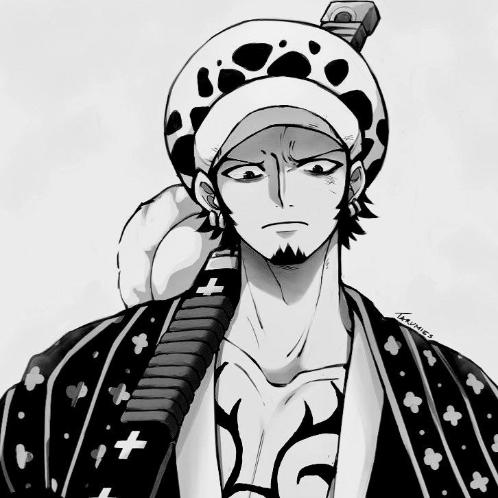
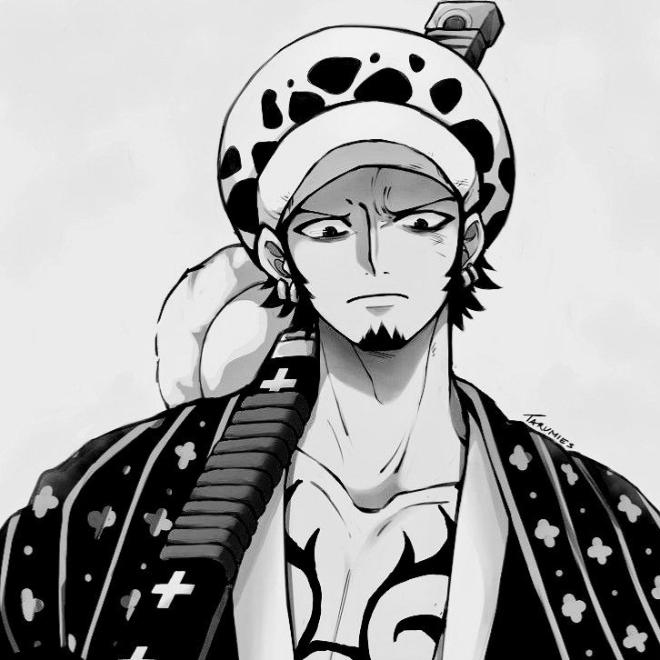

| Full Name | A. |
| Alias | The Balanced Storm |
| Age | 19 (born 2005) |
| Symbol | Electric Blue ⚡ |
| Occupation | Thinker / Conceptual Persona |
| Era | Lockdown Transformation (2020–2021) |
| Full Name | A. |
| Alias | The Balanced Storm |
| Age | 19 (born 2005) |
| Symbol | Electric Blue ⚡ |
| Occupation | Thinker / Conceptual Persona |
| Era | Lockdown Transformation (2020–2021) |
Razen – The Balanced Storm is a semi-biographical conceptual persona based on A., symbolizing the fusion of discipline and emotional awareness forged through solitude and change during the global lockdown. He embodies calm intensity — a predator of chaos that chooses restraint over display.
“Balance is not peace — it’s the point where chaos learns discipline.” — Razen (private note, 2025)

 



Razen represents balance, not perfection. His story reflects a constant evolution — from impulsive words to measured thought, from seeking validation to understanding solitude, and from chaos to control. Each character in his gallery mirrors an aspect of his personality: strength, calm, sacrifice, and vision.